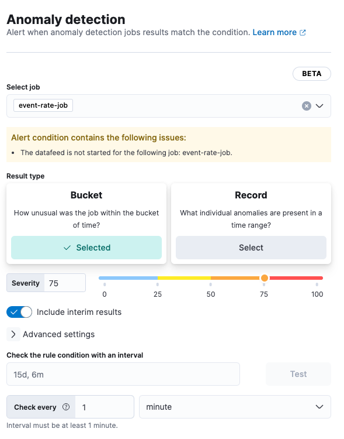

Create an anomaly detection rule
edit[preview] This functionality is in technical preview and may be changed or removed in a future release. Elastic will work to fix any issues, but features in technical preview are not subject to the support SLA of official GA features.
Required role
The Editor role or higher is required to create anomaly detection rules. To learn more, refer to Assign user roles and privileges.
Anomaly detection alerting is in beta
The Anomaly detection alerting functionality is in beta and is subject to change. The design and code is less mature than official generally available features and is being provided as-is with no warranties.
Create an anomaly detection rule to check for anomalies in one or more anomaly detection jobs. If the conditions of the rule are met, an alert is created, and any actions specified in the rule are triggered. For example, you can create a rule to check every fifteen minutes for critical anomalies and then alert you by email when they are detected.
To create an anomaly detection rule:
- In your Observability project, go to AIOps → Anomaly detection.
- In the list of anomaly detection jobs, find the job you want to check for anomalies. Haven’t created a job yet? Create one now.
- From the Actions menu next to the job, select Create alert rule.
- Specify a name and optional tags for the rule. You can use these tags later to filter alerts.
-
Verify that the correct job is selected and configure the alert details:
 -
For the result type:
Choose… To generate an alert based on… Bucket
How unusual the anomaly was within the bucket of time
Record
What individual anomalies are present in a time range
Influencer
The most unusual entities in a time range
- Adjust the Severity to match the anomaly score that will trigger the action. The anomaly score indicates the significance of a given anomaly compared to previous anomalies. The default severity threshold is 75, which means every anomaly with an anomaly score of 75 or higher will trigger the associated action.
- (Optional) Turn on Include interim results to include results that are created by the anomaly detection job before a bucket is finalized. These results might disappear after the bucket is fully processed. Include interim results if you want to be notified earlier about a potential anomaly even if it might be a false positive.
-
(Optional) Expand and change Advanced settings:
Setting Description Lookback interval
The interval used to query previous anomalies during each condition check. Setting the lookback interval lower than the default value might result in missed anomalies.
Number of latest buckets
The number of buckets to check to obtain the highest anomaly from all the anomalies that are found during the Lookback interval. An alert is created based on the anomaly with the highest anomaly score from the most anomalous bucket.
- (Optional) Under Check the rule condition with an interval, specify an interval, then click Test to check the rule condition with the interval specified. The button is grayed out if the datafeed is not started. To test the rule, start the data feed.
- (Optional) If you want to change how often the condition is evaluated, adjust the Check every setting.
- (Optional) Set up Actions.
- Save your rule.
Anomaly detection rules are defined as part of a job. Alerts generated by these rules do not appear on the Alerts page.
Add actions
editYou can extend your rules with actions that interact with third-party systems, write to logs or indices, or send user notifications. You can add an action to a rule at any time. You can create rules without adding actions, and you can also define multiple actions for a single rule.
To add actions to rules, you must first create a connector for that service (for example, an email or external incident management system), which you can then use for different rules, each with their own action frequency.
Connector types
Connectors provide a central place to store connection information for services and integrations with third party systems. The following connectors are available when defining actions for alerting rules:
Some connector types are paid commercial features, while others are free. For a comparison of the Elastic subscription levels, go to the subscription page.
For more information on creating connectors, refer to Connectors.
Action frequency
After you select a connector, you must set the action frequency. You can choose to create a Summary of alerts on each check interval or on a custom interval. For example, you can send email notifications that summarize the new, ongoing, and recovered alerts every twelve hours.
Alternatively, you can set the action frequency to For each alert and specify the conditions each alert must meet for the action to run. For example, you can send an email only when alert status changes to critical.

With the Run when menu you can choose if an action runs when the the anomaly score matched the condition or was recovered. For example, you can add a corresponding action for each state to ensure you are alerted when the anomaly score was matched and also when it recovers.
Action variables
Use the default notification message or customize it.
You can add more context to the message by clicking the Add variable icon  and selecting from a list of available variables.
and selecting from a list of available variables.

The following variables are specific to this rule type. You can also specify variables common to all rules.
-
context.anomalyExplorerUrl - URL to open in the Anomaly Explorer.
-
context.isInterim - Indicate if top hits contain interim results.
-
context.jobIds - List of job IDs that triggered the alert.
-
context.message - Alert info message.
-
context.score - Anomaly score at the time of the notification action.
-
context.timestamp - The bucket timestamp of the anomaly.
-
context.timestampIso8601 - The bucket timestamp of the anomaly in ISO8601 format.
-
context.topInfluencers -
The list of top influencers. Properties include:
-
influencer_field_name - The field name of the influencer.
-
influencer_field_value - The entity that influenced, contributed to, or was to blame for the anomaly.
-
score - The influencer score. A normalized score between 0-100 which shows the influencer’s overall contribution to the anomalies.
-
-
context.topRecords -
The list of top records. Properties include:
-
actual - The actual value for the bucket.
-
by_field_value - The value of the by field.
-
field_name -
Certain functions require a field to operate on, for example,
sum(). For those functions, this value is the name of the field to be analyzed. -
function -
The function in which the anomaly occurs, as specified in the detector configuration. For example,
max. -
over_field_name - The field used to split the data.
-
partition_field_value - The field used to segment the analysis.
-
score - A normalized score between 0-100, which is based on the probability of the anomalousness of this record.
-
typical - The typical value for the bucket, according to analytical modeling.
-
Edit an anomaly detection rule
editTo edit an anomaly detection rule:
- In your Observability project, go to AIOps → Anomaly detection.
- Expand the job that uses the rule you want to edit.
- On the Job settings tab, under Alert rules, click the rule to edit it.